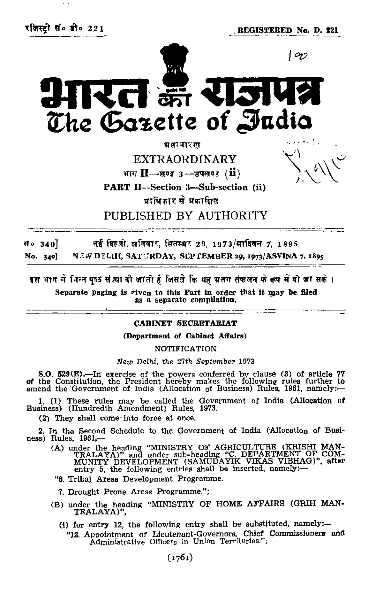
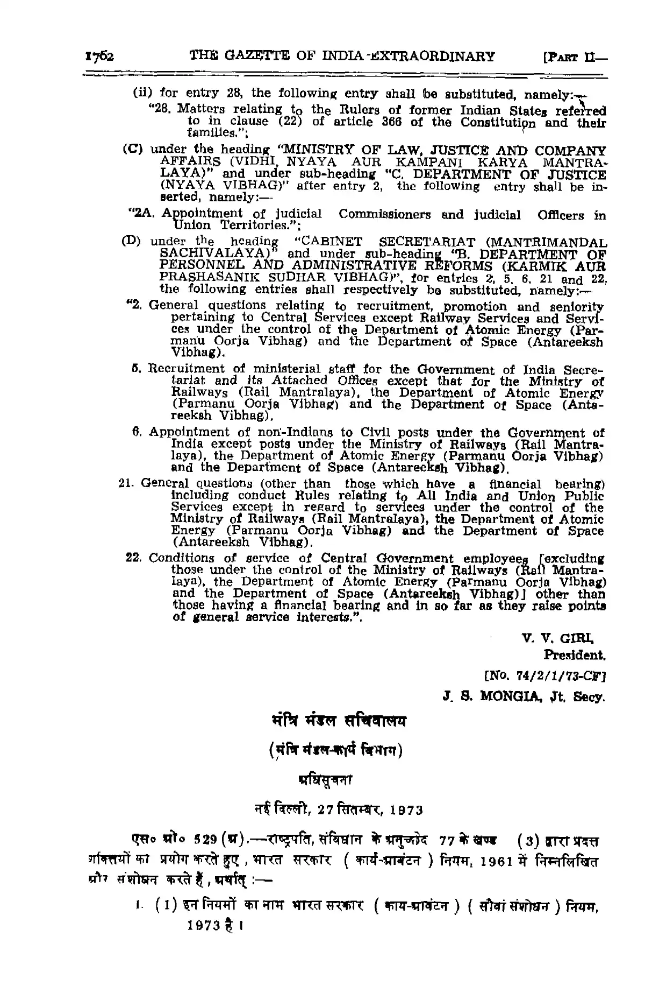
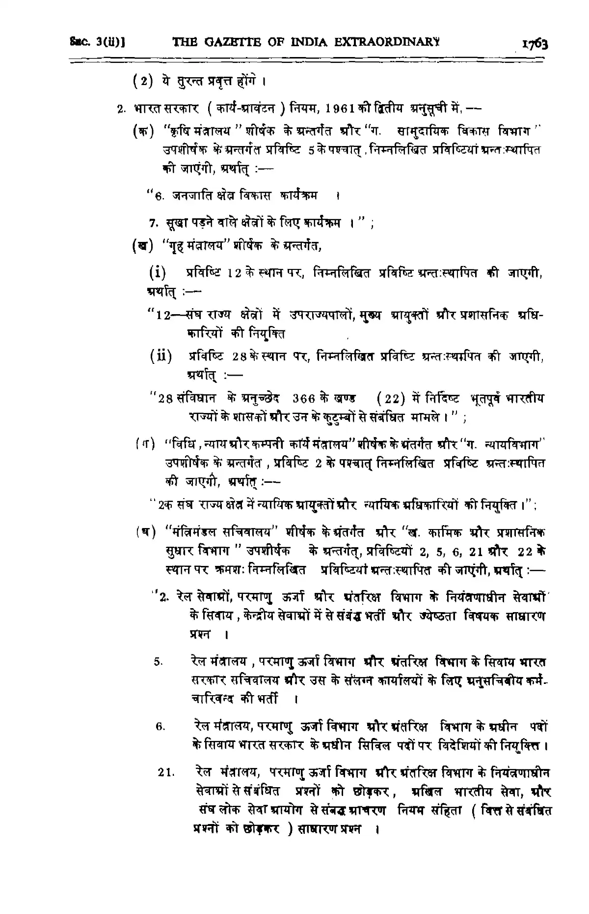
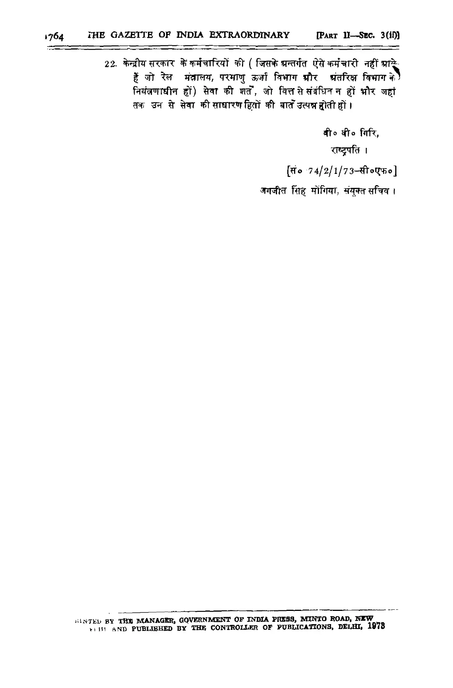

Amendment #100 (S.O. 529(E), 1973)
5 changes: 0 to the First Schedule, 5 to the Second Schedule. 5 applied
The order, page by page
Page 1 of 4

12after Schedule 2 › MINISTRY OF AGRICULTURE › DEPARTMENT OF COMMUNITY DEVELOPMENT › entry 5
- 6. Tribal Areas Development Programme.
- 7. Drought Prone Areas Programme.
applied at schedule 2 › ministry MINISTRY OF AGRICULTURE › department C › entry 6 in the Rules after #100
Schedule 2 › MINISTRY OF HOME AFFAIRS › entry 12
- 12. Appointment of Lieutenant-Governors, Chief Commissioners and Administrative Officers in Union Territorles.
applied at schedule 2 › ministry MINISTRY OF HOME AFFAIRS › part I › group_heading The following subjects which are relatable to… in the Rules after #100
Page 2 of 4

345Schedule 2 › MINISTRY OF HOME AFFAIRS › entry 28
- 28. Matters relating to the Rulers of former Indian States referred to in clause (22) of article 366 of the Constitution and their families.
applied at schedule 2 › ministry MINISTRY OF HOME AFFAIRS › part I › group_heading The following subjects which are relatable to… in the Rules after #100
after Schedule 2 › MINISTRY OF LAW, JUSTICE AND COMPANY AFFAIRS › DEPARTMENT OF JUSTICE › entry 2
- 2A. Appointment of judicial Commissioners and judicial Officers in Union Territories.
applied at schedule 2 › ministry MINISTRY OF LAW. JUSTICE AND COMPANY AFFAIRS › department C › entry 2A in the Rules after #100
Schedule 2 › CABINET SECRETARIAT › DEPARTMENT OF PERSONNEL AND ADMINISTRATIVE REFORMS › entry 2; Schedule 2 › CABINET SECRETARIAT › DEPARTMENT OF PERSONNEL AND ADMINISTRATIVE REFORMS › entry 5; Schedule 2 › CABINET SECRETARIAT › DEPARTMENT OF PERSONNEL AND ADMINISTRATIVE REFORMS › entry 6; Schedule 2 › CABINET SECRETARIAT › DEPARTMENT OF PERSONNEL AND ADMINISTRATIVE REFORMS › entry 21; Schedule 2 › CABINET SECRETARIAT › DEPARTMENT OF PERSONNEL AND ADMINISTRATIVE REFORMS › entry 22
- 2. General questions relating to recruitment, promotion and seniority pertaining to Central Services except Railway Services and Services under the control of the Department of Atomic Energy (Parmanu Oorja Vibhag) and the Department of Space (Antareeksh Vibhag).
- 5. Recruitment of ministerial staff for the Government of India Secretarlat and its Attached Offices except that for the Ministry of Railways (Rail Mantralaya), the Department of Atomic Energy (Parmanu Oorja Vibhag) and the Department of Space (Antareeksh Vibhag).
- 6. Appointment of non-Indians to Civil posts under the Government of India except posts under the Ministry of Railways (Rail Mantralaya), the Department of Atomic Energy (Parmanu Oorja Vibhag) and the Department of Space (Antareeksh Vibhag).
- 21. General questions (other than those which have a financial bearing) Including conduct Rules relating to All India and Union Public Services except in regard to services under the control of the Ministry of Railways (Rail Mantralaya), the Department of Atomic Energy (Parmanu Oorja Vibhag) and the…
- 22. Conditions of service of Central Government employees [excluding those under the control of the Ministry of Railways (Rail Mantralaya), the Department of Atomic Energy (Parmanu Oorja Vibhag) and the Department of Space (Antareeksh Vibhag)] other than those having a financial bearing and in so far…
applied at schedule 2 › ministry CABINET SECRETARIAT › department B › group_heading I › entry 2 in the Rules after #100
Page 3 of 4

Page 4 of 4

How this document was read
From the Government of India (Allocation of Business) Rules, 1961 and their amendments, as published by the Cabinet Secretariat (cabsec.gov.in), read by orgpedia. The readings of the older scanned gazettes have known gaps.